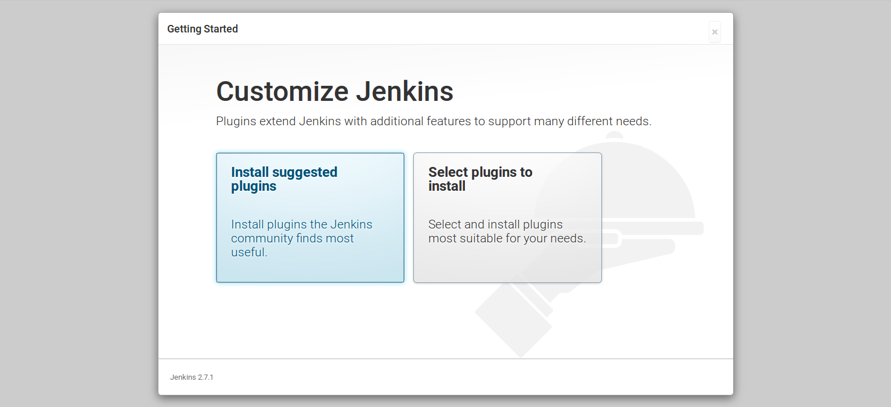
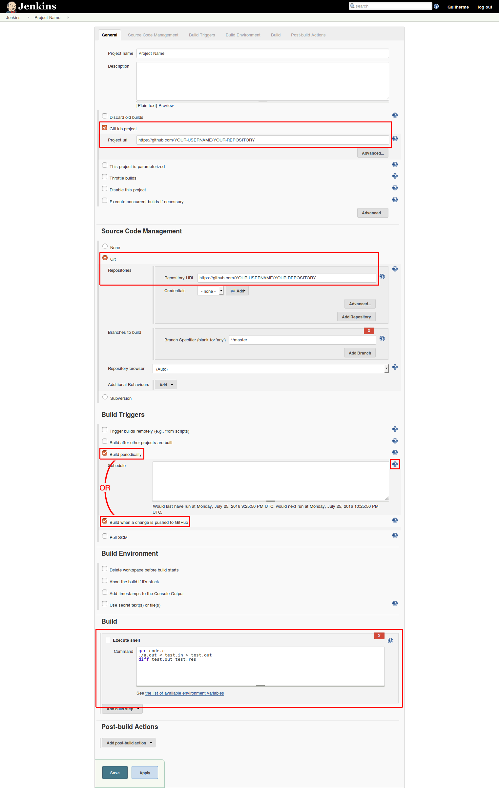
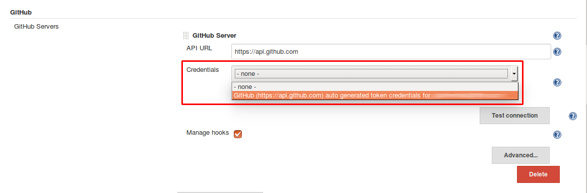
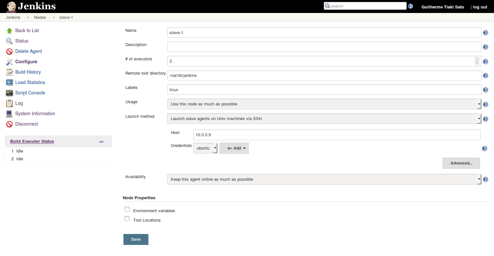
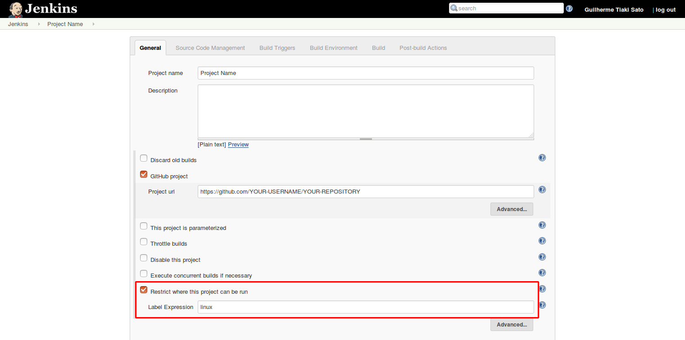

Continuous integration allows code to be tested automatically every time it’s changed, detecting errors as early as possible. In this tutorial a CI using a GitHub repository will be approached.
Step 1: Installing and setting up Jenkins and Git
To install Jenkins, execute the following commands:
wget -q -O - https://pkg.jenkins.io/debian/jenkins-ci.org.key | sudo apt-key add -
sudo sh -c 'echo deb http://pkg.jenkins.io/debian-stable binary/ > /etc/apt/sources.list.d/jenkins.list'
sudo apt-get update
sudo apt-get install jenkins
To install git, simply execute:
sudo apt-get install git
Access Jenkins through http://localhost:8080 and follow the instructions for the initial setup. Choose Install suggested plugins when asked.

Step 2: Creating a job
In Jenkins dashboard, click on New Item, give your project a name and select Freestyle project.
You may choose Discard old builds in order to avoid using too much storage in the long term.
Check GitHub project and enter the GitHub URL of the project. Use the format https://github.com/YOUR-USERNAME/YOUR-REPOSITORY
In source code management section, choose Git and enter the repository URL the same way as above.
Step 2.1: Choosing the build trigger
Under Build Triggers it is possible to choose to build periodically or when a change is pushed into GitHub. Although building only when GitHub changes is more efficient, it is required to your Jenkins server to be accessible through the internet, and the you must own the repository. Building periodically may waste resources, but it is simpler to configure.
Step 2.1.1: Build Periodically
Check Build Periodically and define the period using the proper syntax found when clicking the ?.
Complete the job creating by adding a build step (e.g. a shell script to compile and run a test) and jump to step 4
The test input and expected output should be in the repository.
Step 2.1.2: Build when a change is pushed into GitHub
Check build when a change is pushed into GitHub
Complete the job creating by adding a build step (e.g. a shell script to compile and run a test) and follow to step 3
The test input and expected output should be in the repository.

Step 3: Configuring GitHub plugin - Skip if building periodically
Go to Manage Jenkins → Configure System → GitHub section → Advanced → Manage additional GitHub Actions → Convert login and password to token
A new sub-section will appear right above.
Select From login and password, fill your login and password from GitHub and press Create token credentials

Above this sub-section, click Add GitHub server. Keep the API URL unchanged.
Under Credentials dropdown menu, select the token just created and test your connection.

Step 4: Testing it
If using periodical build, click the Build now icon to test. If the test fails, check the console output to find the issue (e.g. missing compiler).
If using GitHub trigger, change a file in the repository. The build should start automatically in a few seconds.
#Step 5: Adding slave machines - Optional
As your projects grow, you may run out of resources in your machine. A possible solution is to add one or more slave machines, which will be responsible for building your projects, while the current machine will become the master and manage everything (the master will still be able to run jobs if desired).
The slave machine doesn’t need Jenkins installed on it. There are many ways to connect the slave with the master, here, SSH will be used.
Install Java and Git in the slave using:
sudo apt-get install default-jre
sudo apt-get install git
Create a directory to be used by Jenkins, in this case will be the same path used by default in the master machine: /var/lib/jenkins
sudo mkdir /var/lib/jenkins
Change the ownership of the directory to the same user used to login using SSH
chown ubuntu:ubuntu /var/lib/jenkins
Back to the master machine:
Go to Manage Jenkins → Manage Nodes → New Node
Name your node and select Permanent Agent
The recommended # of executors is the number of cores in the slave machine
The Remote root directory is the path to the directory created.
If necessary to divide the slave machines into different groups, label them (e.g. the OS running in the machine, the CPU architecture)
The Launch method used here will be SSH, but other methods are also fine.
Simply enter your host and create a credential using your username and password, or username and private key.
Press Save

##Step 5.1: Restricting machines where projects can be run
If your slaves have different environments, your should restrict the machines where each project will run.
Under the project settings, check Restrict where this project can be run and type the machine name, use a label, or even use a more complex rule using logical operators (click the ? for more information)

To prevent the master machine to run projects, go to Manage Jenkins → Manage Nodes → master → Configure → # of executors and set to 0.